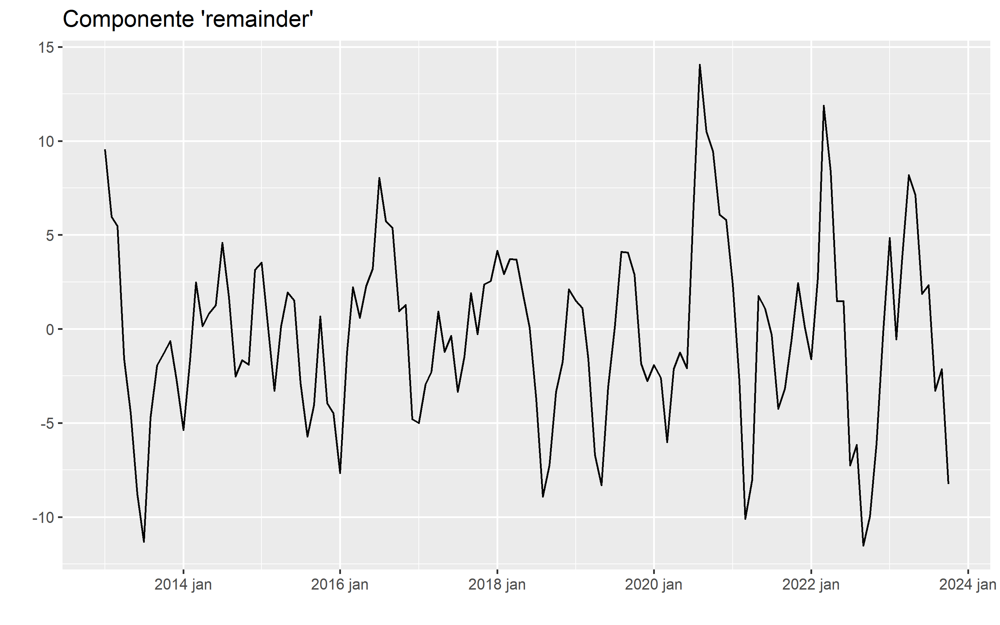
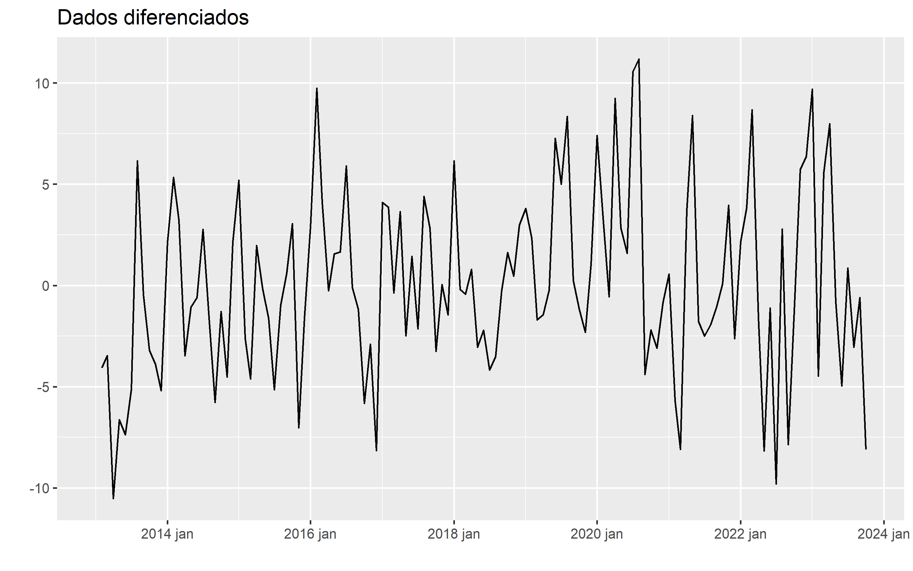

Introdução
Nesta segunda e última parte da análise exploratória dos dados da cotação do ouro vou continuar análisando caracteristicas dos dados que possam ser úteis na criação de modelos preditivos. Os dados e pacotes utilizados, assim como o pré-processamentos, podem ser encontrados na primeira parte desta análise. O objéto criado na postagem anterior que será utilizado nesta postagem será o fit, que contem os dados originais e as componenete criadas pelo modelo STL.
Estacionariedade dos Dados
A estacionariedade é um conceito fundamental na análise de séries temporais e processos estocásticos. Uma série temporal é considerada estacionária quando suas propriedades estatísticas, como a média e a variância, permanecem constantes ao longo do tempo. Isso implica que os padrões e as relações entre os dados não mudam com o tempo. A estacionariedade é crucial para muitas técnicas de modelagem e previsão, pois muitos métodos assumem que os dados exibem essa propriedade para produzir resultados precisos. Caso contrário, a falta de estacionariedade pode levar a resultados enganosos, uma vez que os padrões flutuantes nos dados podem obscurecer tendências reais e criar falsas correlações. Existem testes estatísticos e técnicas de transformação para avaliar e alcançar a estacionariedade em séries temporais, garantindo assim uma base sólida para análises e previsões precisas.
Para avaliar a estacionariedade dos dados serão utilizados o teste Dickey-Fuller Aumentado (adf.test()) e o teste de Kwiatkowski-Phillips-Schmidt-Shin (unitroot_kpss).
Dickey-Fuller (ADF)
O teste Dickey-Fuller Aumentado (ADF) é usado para verificar a presença de raízes unitárias em uma série temporal univariada. A hipótese nula deste teste é de que a série temporal tem uma raiz unitária, ou seja, que a série não é estacionária. Se o valor-p do teste for menor que um determinado nível de significância, podemos rejeitar a hipótese nula e concluir que a série é estacionária.
A equação do teste ADF é dada por:
\[\Delta y_t = \alpha + \beta t + \gamma y_{t-1} + \delta_1 \Delta y_{t-1} + \delta_2 \Delta y_{t-2} + \ldots + \delta_p \Delta y_{t-p} + \varepsilon_t\]
onde:
\(\Delta y_t \text{ é a diferença entre } y_t \text{ e } y_{t-1}\),
\(\alpha\) é o termo constante,
\(\beta\) é o coeficiente da tendência temporal,
\(\gamma\) é o coeficiente de \(y_{t-1}\),
\(\delta_1\), \(\delta_2\), \(\ldots\), \(\delta_p\) são os coeficientes das diferenças defasadas de \(y_t\),
\(\varepsilon_t\) é o termo de erro.
Aqui vou utilizar a função adf.test do pacote tseries.
tseries::adf.test(ts(fit$value),alternative ="stationary")
Augmented Dickey-Fuller Test
data: ts(fit$value)
Dickey-Fuller = -2.4719, Lag order = 5, p-value = 0.3803
alternative hypothesis: stationaryO teste adf não encontrou evidencia para rejeitar a hipótese nula de não estacionariedade.
Kwiatkowski-Phillips-Schmidt-Shin (KPSS)
A ideia básica por trás do teste KPSS é verificar se a série temporal é estacionária em torno de uma tendência determinística, em oposição à estacionariedade ao redor de um valor médio constante. A hipótese nula do teste KPSS é que a série é estacionária em torno de uma tendência determinística. A estatística do teste KPSS é calculada para testar essa hipótese, e a interpretação depende do valor-p do teste em relação a um nível de significância escolhido. Se o valor-p for maior que o nível de significância, não podemos rejeitar a hipótese nula, o que sugere que a série é estacionária em torno de uma tendência. Por outro lado, se o valor-p for menor que o nível de significância, podemos rejeitar a hipótese nula e concluir que a série não é estacionária em torno de uma tendência, o que significa que a tendência é estocástica.
A estatística do teste KPSS é definida da seguinte forma:
\[KPSS = \frac{T^2 \cdot \hat{\sigma}^2}{\sum_{t=1}^{T} S_t^2}\]
Onde:
\(T\) é o número de observações na série temporal.
\(S_t\) é a soma cumulativa das diferenças entre as observações e a estimativa da tendência local em cada ponto na série temporal. Calculado como: \[S_t = \sum_{i=1}^{t} (X_i - \hat{m}_t)\].
Onde \(X_i\) é a observação no tempo \(i\) e \(\hat{m}_t\) é a estimativa da tendência local no tempo \(t\). \(\hat{\sigma}^2\) é uma estimativa da variância da série temporal.
Para o teste KPSS será usado a função unitroot_kpss do pacote fable.
fit %>%
fabletools::features(value, unitroot_kpss) %>%
set_tab("Teste KPSS")| .model | kpss_stat | kpss_pvalue |
|---|---|---|
| feasts::STL(value) | 1.8768 | 0.01 |
O teste kpss, apresenta evidência para rejeitar a hipótese nula, que nesse caso é de estacionariedade.
Os dois testes indicam a não estacionariedade dos dados, uma característica desfavorável que, em alguns casos, é essencial para certos tipos de modelos. A seguir examinaremos algumas das principais abordagens para transformar os dados em um estado estacionário. É importante ressaltar desde já que a transformação dos dados com o objetivo de torná-los estacionários devem ser revertida durante a fase de previsão.
Transformando os Dados
Existem diversos métodos para transformar séries temporais a fim de torná-las estacionárias. A escolha do método depende das características da série temporal e dos objetivos da análise e ou modelagem. Às vezes, pode ser necessário experimentar vários métodos para determinar qual é o mais adequado antes de aplicar um modelo de previsão. Aqui estão alguns dos principais métodos de transformação:
Diferenciação: A diferenciação é uma técnica simples, ela envolve subtrair cada valor na série pelo valor anterior. Se uma série temporal não for estacionária devido a uma tendência linear, uma diferenciação de primeira ordem geralmente é suficiente.
Diferenciação sazonal: Envolve subtrair o valor atual pelo valor do mesmo período sazonal anterior (por exemplo, o valor de um ano atrás, se a sazonalidade for anual).
Transformações Logarítmicas: Se a série temporal possui uma tendência exponencial, uma transformação logarítmica pode ser útil. Isso é feito aplicando o logaritmo natural (ln) aos valores da série, tornando a série mais linear.
Decomposição: A decomposição é uma técnica que separa uma série temporal em três componentes principais: tendência, sazonalidade e ruído. Uma vez separados, você pode remover a tendência e a sazonalidade, deixando apenas o componente de ruído estacionário. A decomposição de séries temporais pode ser realizada usando métodos como a decomposição de média móvel ou a análise de componentes principais.
Suavização exponencial: A suavização exponencial é uma técnica que suaviza os dados, removendo flutuações de curto prazo. Ela pode ser usada para tornar a série mais estável, especialmente se houver ruído aleatório significativo.
Box-Cox Transformation: A transformação Box-Cox é uma família de transformações paramétricas que inclui a transformação logarítmica como um caso especial. Ela é usada quando a variância dos dados não é constante ao longo do tempo. A transformação Box-Cox pode ajudar a estabilizar a variância dos dados.
A seguir vou verificar a eficácia de três métodos aos dados da cotação do ouro: a decomposição, Box-Cox e diferenciação.
Decomposição
Após a decomposição dos dados, conforme discutido na primeira postagem desta série, obtemos várias versões dos dados originais. Neste ponto, estou examinando a estacionariedade dos dados usados nos testes espectrais, que resultam da remoção da componente ‘tendência’ criada pelo modelo STL dos dados originais. Como já mencionado anteriormente, os dados sem a tendência apresentam o mesmo comportamento da componente residual do modelo STL.

Vamos utilizar novamente o test KPSS para verificar a estacionariedade dos dados.
| .model | kpss_stat | kpss_pvalue |
|---|---|---|
| feasts::STL(value) | 0.0361 | 0.1 |
O teste não encontrou evidências para rejeitar a hipótese nula de estacionariedade.
Agora vou aplicar o teste de Ljung-Box, que foi introduzido anteriormente, para verificar se as observações na série temporal exibem autocorrelação ou se os valores são aleatórios e independentes.
| .model | lb_stat | lb_pvalue |
|---|---|---|
| feasts::STL(value) | 343.7225 | 0 |
O teste indica a presença de correlação entre as observações. Este resultado era esperado, uma vez que esses são os mesmos dados usados nas análises espectrais que mostraram a presença de componentes periódicas nos dados.
Box Cox
A transformação de Box-Cox é uma técnica estatística usada para estabilizar a variância e tornar uma distribuição mais próxima da normalidade. Ela é frequentemente aplicada em séries temporais ou outras análises estatísticas quando os dados exibem heteroscedasticidade (variação não constante) ou não seguem uma distribuição normal.
Sua forma geral pode ser definida matematicamente da seguinte maneira:
Para um conjunto de dados \((x_1, x_2, x_3, \ldots, x_n)\) a transformação de Box-Cox é definida como:
\[y_i = \begin{cases} \frac{x_i^\lambda - 1}{\lambda}, & \text{se } \lambda \neq 0 \\ \ln(x_i), & \text{se } \lambda = 0 \end{cases}\]
Onde:
\(y_i\) é o valor transformado do dado \(x_i\)
\(\lambda\) é um parâmetro que controla o tipo de transformação.
Quando \(\lambda\) é igual a zero, a transformação se torna uma transformação logarítmica natural (\(ln(x_i)\)) Quando \(\lambda\) não é igual a zero, a transformação é uma potência do dado original (\(x_i^\lambda\)) com uma correção para garantir que a transformação seja bem definida para todos os valores de \(x_i\).
A escolha do valor ideal de \(λ\) geralmente é feita de maneira a maximizar a normalidade ou estabilizar a variância dos dados transformados. É comum testar vários valores em um intervalo, aplicar a transformação a cada valor da série e analisar a normalidade e a homogeneidade da variância dos dados transformados. Para esta tarefa vou utilizando a função forecast::BoxCox.lambda do pacote forecast, que possibilita a seleção automática desse parâmetro. Essa função escolhe o lambda de modo a maximizar o perfil da verossimilhança logarítmica de um modelo linear ajustado aos dados. Para dados não sazonais, é ajustada uma tendência temporal linear, enquanto que para dados sazonais, é usado um modelo linear de tendência temporal com variáveis dummy sazonais
lambda <- round(forecast::BoxCox.lambda(fit$value), digits = 2)
lambda[1] 0.38fit %>%
mutate(box_cox_close = fabletools::box_cox(value, lambda=lambda)) %>%
ggplot(aes(index,box_cox_close))+
geom_line()+
ggtitle("Transformação Box-Cox")+
xlab("")+
ylab("")
fit %>%
mutate(box_cox_close = fabletools::box_cox(value, lambda=lambda)) %>%
features(box_cox_close, unitroot_kpss) %>%
set_tab("Teste KPSS")| .model | kpss_stat | kpss_pvalue |
|---|---|---|
| feasts::STL(value) | 1.8652 | 0.01 |
A transformação não modificou a forma dos dados, apenas o range de valores do eixo y. Entretanto, como o teste KPSS indicou isso não foi o suficiente para tornar os dados estacionários.
Diferenciação
A diferenciação em séries temporais é uma técnica comumente usada para transformar dados não estacionários em um formato mais adequado para análise e modelagem. Ela envolve a subtração de valores consecutivos da série, visando remover tendências e padrões de sazonalidade. Ao aplicar diferenciação, a série é transformada em uma nova série de diferenças, que é esperançosamente estacionária. Essa abordagem permite a utilização de modelos estatísticos, como o ARIMA (AutoRegressive Integrated Moving Average), que pressupõem a estacionariedade dos dados.
Está tecnica pode ser descrita da seguinte forma:
\[\Delta y_t = y_t - y_{t-1}\]
Onde:
- \(\Delta\) representa a diferença entre o valor atual \(y_t\) e o valor anterior \(y_{t-1}\) na série tempora.
Para se determinar o número de diferenças necessárias para tornar os dados estacionários usaremos a função unitroot_ndiffs, que tem com base o teste ADF, anteriormente explicado. Lembrando que o termo “unit root” refere-se à raiz unitária, que é uma característica de uma série temporal não estacionária. A presença de uma raiz unitária indica que a série não reverte rapidamente a perturbações, o que pode tornar a análise e a modelagem mais desafiadoras.
fit %>%
fabletools::features(value, unitroot_ndiffs) %>%
set_tab("Número de Diferenças")| .model | ndiffs |
|---|---|
| feasts::STL(value) | 1 |
O teste indica a necessidade de realizar uma diferenciação para tornar a série estacionária.
fit %>%
mutate(
diff_close = tsibble::difference(value)
) %>%
ggplot(aes(index,diff_close))+
geom_line()+
ggtitle("Transformação por diferenças")+
xlab("")+
ylab("")
Após a transformação dos dados, aparentemente, não parece haver nenhuma estrutura remanescente.
| .model | kpss_stat | kpss_pvalue |
|---|---|---|
| feasts::STL(value) | 0.3244 | 0.1 |
O teste KPSS apresenta evidências que sustentam a aceitação da hipótese nula de estacionariedade.
fit %>%
mutate(
diff_close = tsibble::difference(value)
) %>%
fabletools::features(value, ljung_box, lag = 80) %>%
set_tab("Teste LJUNG-BOX")| .model | lb_stat | lb_pvalue |
|---|---|---|
| feasts::STL(value) | 2860.319 | 0 |
O teste Ljung-Box indica que a série se comporta como um ruído branco, ou seja, não apresenta autocorrelação significativa.
Funções de Autocorrelações
As funções de autocorrelação (do inglês, Autocorrelation Function ACF) e de Autocorrelação Parcial (Partial Autocorrelation Function PACF) são ferramentas muito utilizadas na análise de séries temporais para identificar estruturas dentro dos dados, como sazonalidade, tendência e estacionáriedade.
Como estas ferramentes são essênciais para diversos tipos de modelos vou detalhar um pouco mais o seu funcionamento e aplicações. Dando um enfoque maior na sua relação como modelos ETS e ARIMA, temas dos próximos posts.
Função de Autocorrelação (ACF)
A ACF pode ser representada da seguinte forma:
Dada uma série temporal \({X_t}\), onde t representa o tempo, a autocorrelação para um atraso (lag) \(k\) é calculada da seguinte maneira:
\[ρ(k) = Cov(X_t, X_{t-k}) / (σ(X_t) * σ(X_{t-k}))\]
Onde:
\(ρ(k)\) é a autocorrelação para o atraso \(k\).
\(Cov(X_t, X_{t-k})\) é a covariância entre \(X_t\) e \(X_{t-k}\), ou seja, a medida de como as observações estão relacionadas em \(t\) e \(t-k\).
\(σ(X_t)\) é o desvio padrão de \(X_t\), que mede a variabilidade dos valores em \(t\).
\(σ(X_{t-k})\) é o desvio padrão de \(X_{t-k}\), que mede a variabilidade dos valores em \(t-k\).
Em resumo, a autocorrelação para um determinado atraso \(k\) é a covariância normalizada pela variabilidade (desvio padrão) das observações separadas por esse atraso. Ela varia de -1 a 1, onde valores próximos de 1 indicam forte autocorrelação positiva, valores próximos de -1 indicam forte autocorrelação negativa e valores próximos de 0 indicam ausência de autocorrelação.
Função de Autocorrelação Parcial (PACF)
A PACF é calculada da seguinte maneira:
Suponha que temos uma série temporal \(x_t\) para \(t = 1, 2, \ldots, N\). O PACF de atraso \(k\) (\(PACF_k\)) é definido como:
\[PACF_k = \frac{\gamma_{t,t-k} - \sum_{i=1}^{k-1} \phi_i \gamma_{t-k,t-k+i}}{1 - \sum_{i=1}^{k-1} \phi_i PACF_i}\]
onde:
\(\gamma_{t,t-k}\) é a função de autocovariância entre \(x_t\) e \(x_t-k\).
\(\phi_i\) são os coeficientes estimados de um modelo AR de ordem \(i\), onde \(i = 1, 2, \ldots, k-1\)
A função PACF é calculada iterativamente, começando com \(k\) = 1 e progredindo até o atraso máximo desejado. Mede a correlação entre uma observação em um determinado momento e observações em intervalos de tempo anteriores, removendo o efeito de observações em lags intermediários. Isso ajuda a identificar a estrutura de dependência direta, indicando o possível número de termos autorregressivos a serem incluídos em um modelo AR, crucial para fazer previsões precisas.
Algumas Aplicações
Avaliação de Estacionariedade:
A presença de autocorrelação significativa em lags variados nas funções ACF pode sugerir que a série não é estacionária. A estacionariedade é uma condição importante para muitos modelos de séries temporais, como modelos ARMA e modelos de suavização exponencial.
Se a série não for estacionária, pode ser necessário aplicar diferenciação para torná-la estacionária antes de modelar.
Se após a diferenciação a série parecer ter flutuações constantes em torno de um nível médio, isso sugere uma tendência aditiva. Se as flutuações em torno do nível médio parecem crescer ou diminuir ao longo do tempo, isso sugere uma tendência multiplicativa.
Se a ACF apresentar picos em múltiplos do período sazonal, isso sugere que há uma sazonalidade presente na série que precisa ser ajustada por meio da diferenciação sazonal.
A PACF é especialmente útil para identificar o número de diferenciações sazonais necessárias. Se houver um componente sazonal na série, você pode observar picos significativos na PACF em lags correspondentes aos múltiplos do período sazonal.
Identificando o componente de sazonalidade:
Identifique picos significativos nas defasagens da ACF. Se esses picos ocorrerem em múltiplos inteiros do período sazonal, é um indício de sazonalidade.
Se houver sazonalidade aditiva na série, você geralmente verá picos significativos na ACF em múltiplos lags (intervalos de tempo) que correspondem aos períodos sazonais. Por exemplo, em uma série mensal com sazonalidade anual, você esperaria ver picos nas defasagens 12, 24, 36, etc.
Para sazonalidade multiplicativa, os picos na ACF tendem a ser mais espaçados, seguindo os múltiplos do período sazonal, mas podem ser mais fracos em comparação com a sazonalidade aditiva.
Novamente, para sazonalidade aditiva, você pode ver picos significativos na PACF em múltiplos do período sazonal. Para sazonalidade multiplicativa, a PACF também pode mostrar picos, mas eles podem ser menos pronunciados que na sazonalidade aditiva.
Ordem de Modelos ARMA (Autoregressive Moving Average):
A ACF pode ajudar a identificar a ordem dos termos de média móvel (MA) em um modelo ARMA/ARIMA, observando os lags significativos na ACF.
A análise da PACF é particularmente útil para determinar a ordem dos termos autorregressivos (AR) em um modelo ARMA. Os lags significativos na PACF indicam quantos lags anteriores devem ser incluídos no modelo.
Para fins didáticos, eu vou aplicar as técnicas mencionadas aos dados em seu estado original, nos dados sem a componente de tendência, mas com as compoentes periódicas. E nos dados após a diferenciação, onde os dados podem resultantes podem ser considerados ruido branco.
Dados Originais
A utilização das funções ACF e PACF pode ser adotada como uma abordagem inicial em uma análise exploratória, visando identificar estruturas de interesse. Minha escolha por iniciar a análise utilizando métodos de decomposição e análises espectrais ocorre porque considero essas técnicas mais robustas e informativas.
Caso escolhidas como primeira aboragem os resultados a ser interpretados seriam os seguintes.
#max_lag <- nrow(fit)-1acf_plot <-
fit %>%
feasts::ACF(value, lag_max = 80) %>%
feasts::autoplot()pacf_plot <-
fit %>%
feasts::PACF(value, lag_max = 80) %>%
feasts::autoplot()ggpubr::ggarrange(acf_plot,pacf_plot, ncol=2)Os resultados da função ACF exibem um padrão aparentemente senoidal, com valores de correlação que oscilam entre positivos e negativos de forma significativa. Os lags são sequenciais, e a transição entre esses valores ocorre de maneira gradual. Por outro lado, os resultados da função PACF mostram valores significativos apenas no lag zero, enquanto os lags subsequentes não demonstram um comportamento senoidal. Esses resultados, juntamente com a análise visual dos dados brutos, sugerem fortemente a presença de não estacionariedade nos dados. A correlação significativa entre os dados parece ser devido à existência de uma tendência nos mesmos.
Um aspecto interessante desses resultados é que o último lag (ACF) com valores teoricamente indicativos de boa previsibilidade (>= 0.5) é observado no lag de 19 meses, o que está em linha com as conclusões das análises espectrais realizadas nos dados que não apresentam tendência.
Dados sem Tendência
A remoção apenas da tendência dos dados para torná-los estacionários não é uma prática comum quando se trata de modelagem, especialmente em modelos estatísticos. Em geral, esses modelos buscam eliminar tanto a tendência quanto a sazonalidade, pois essas estruturas são mais previsíveis. O foco principal recai sobre a análise da parte residual e aleatória dos dados. No entanto, os dados que foram despojados apenas da componente de tendência podem ser úteis para ilustrar duas situações: a primeira é que os dados não apresentam uma tendência intrínseca; a segunda é que, mesmo após a aplicação da diferenciação para torná-los estacionários, ainda podem persistir indícios de sazonalidade nos dados.
Dados sazonais
Dados Diferenciados
Conclusão
Uma vez que já apresentamos e testamos a diferenciação dos dados, temos conhecimento de que a aplicação dessa técnica se mostra eficaz na transformação dos dados em uma forma estacionária. É importante mencionar isso, pois este é o próximo passo após a identificação de tendências e não estacionariedade. Ao analisarmos o gráfico resultante da diferenciação, que exibe um comportamento aproximadamente constante, sugere-se a presença de uma tendência aditiva.
Existem evidências para rejeitar a hipótese nula de que não há autocorrelação. Assim como nos dados originais e na transformação box_cox, os dados apresentam correlação com seus atrasos de modo significativo. Porém a caracteristica da curva de correlção com a remoção do trend é bem diferente, sugerindo a existência de um padrão ciclico nos dados. Isso vai de encontro as componetes encontradas pelo modelo STL, que indica a existência de componetes sazonais nos dados. Contudo, os lags com valore de até 0.5 vão até o lag 35.
Até o momento, as informações-chave que podem orientar a etapa de modelagem são as seguintes:
A série não é estacionária, o que aponta para a necessidade de aplicar alguma forma de transformação nos dados. Opções incluem a transformação Box-Cox, raiz quadrada, diferenciação, remoção de tendência, entre outras.
O resultado da análise de autocorrelação reforça os resultados encontrados pelas análises espctrais. Apesar dos resultados de correlação apresentarem valores acima da faixa de significância para lags além de 18 meses, os valores são todos inferiores a 0.5. Além disso nenhuma periodicidade muito maior que 18 meses aparece nos testes espectrais.
Conforme evidenciado pelo gráfico da série temporal, esses resultados apontam para a não estacionariedade dos dados.
Após a modelagem, é necessário reverter a diferenciação para realizar previsões na escala original da série temporal. Isso envolve somar as diferenças previstas aos valores anteriores da série (ou ao último valor conhecido da série original). Ao realizar esse processo, estamos extrapolando as mudanças previstas para os próximos períodos e adicionando-as aos valores anteriores para obter as previsões finais. Isso pressupõe que as mudanças esperadas no período futuro sejam semelhantes às mudanças observadas no período de treinamento do modelo.
Aqui está uma fórmula geral para ilustrar o processo de reversão da diferenciação:
Seja \(y_t\) o valor original na época \(t\) e \(y'_t\) a série temporal diferenciada na época \(t\). Seja \(y'_t+1\) a previsão diferenciada para o período \(t+1\). Então, a previsão final \(y'_{t+1}\) na escala original é calculada da seguinte forma:
\[y_{t+1} = y_t + y'_{t+1}\]
Referências
Forecasting: Principles and Practice (3rd ed)/Chapter 4 Time series features
adf.test: Augmented Dickey–Fuller Test
unitroot_kpss: Unit Root Test Statistics
BoxCox.lambda: Automatic selection of Box Cox transformation parameter